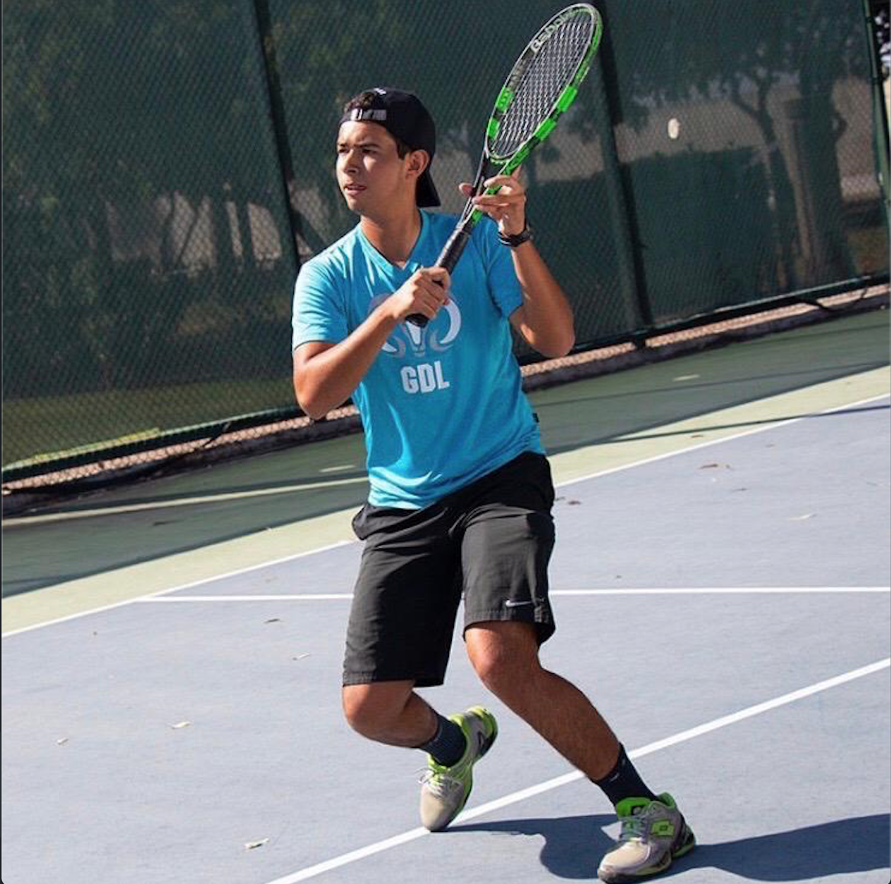
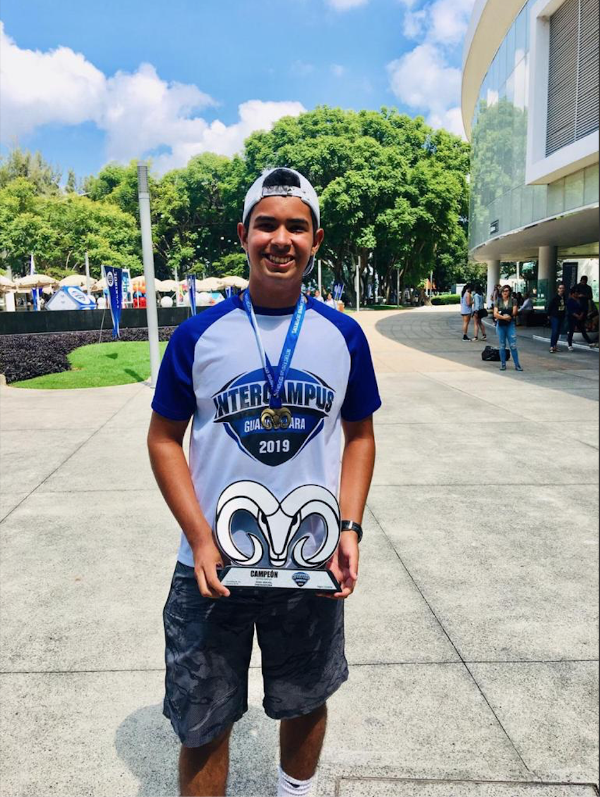
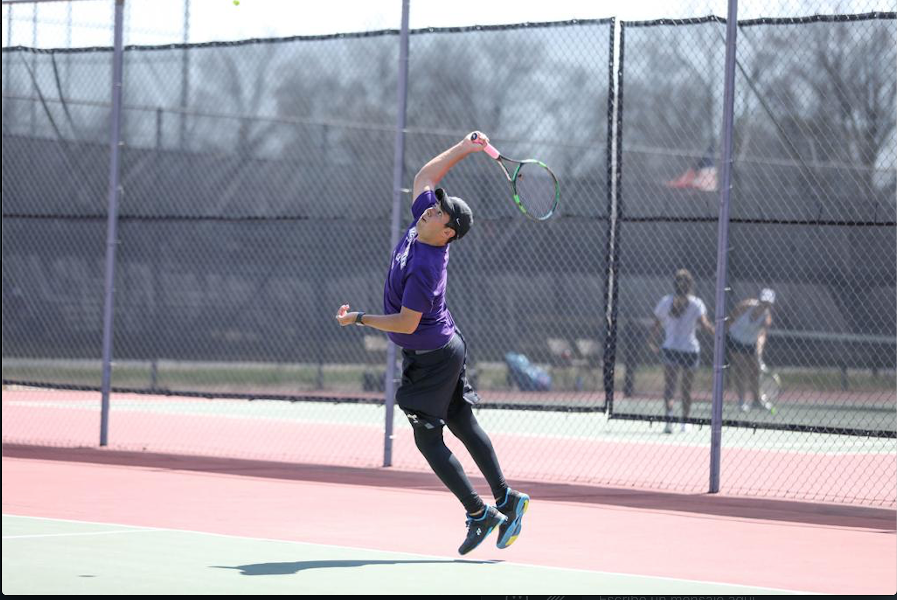

Diego
Castillo
My name is Diego Castillo Samperio, I am a junior undergraduate Computer Science student at McKendree University, however I am not from the United States. I was born on April 18 in Guadalajara, Jalisco in Mexico. I have always played sports, I started doing karate when I was 5 years old and got to be a black belt at the age of 10, however at 11 years old I decided to leave karate and start my tennis career. Since when I started playing tennis, I knew it was going to be an important part in my life, I continiued playing tennis all the way trough high school, I was part of one of the best high school/college teams in the country, however I always wanted to play tennis for a college in the United States.
When I turned 17, I had to start looking for colleges, I had Division 1 offers as well as Division 2 offers to play tennis and get my undergraduate degree in Computer Science, ultimately I decided to commit to McKendree University, where I received academic and athletic scholarship to play in the Men's Tennis Team.
Instituto Tecnologico de Estudios Superiores de Monterrey campus Guadalajara: 2017-2020
The Instituto Tecnologico de Estudios Superiores de Monterrey is one of the best high schools in Mexico, however I was accepted. At the begining it was d¡ifficult, since I would leave my house at 6:30 am to have 7 hours of class and right after 1 hour of weights and 3 of tennis, leaving campus at 7:00 pm to go back and do 1 more hour of Crossfit and do homework afterwards, doing this 5 days a week was very hard, however I managed to do a good job.
Being at the Instituto Tecnologico de Estudios Superiores de Monterrey helped me develop my academic, sports and social skills, I got a better interest towards math and programming which ultimately led to studying Computer Science, enhancing my Tennis skills and giving me friends and connections that are still kept alive after all these years.
McKendree University: 2020-2024
McKendree University is a private university located in Lebanon, a town 15 minutes away from St. Louis, MO.
I have a lot of good memories being there at McKendree, being in classes with my teammates after having 5:30 am practice, travelling with the team, and just living the college experience with a great group of people. From an academic standpoint, I have been having a great performance during my time at McKendree University, having a cummulative GPA of 3.4, while being in the National Honor Society of Sigma Zeta, the McKendree University Men’s Tennis team, the McKendree University Robotics Team, the Association for Computer Machinery (ACM), being the Vice President at the Lyn Huxford Center for Community Service and a McKendree University UNI-101 peer mentor. I have learned a lot about object-oriented programming, especially C++, which is today one of my favorite languages.



@ Copyright Diego Castillo